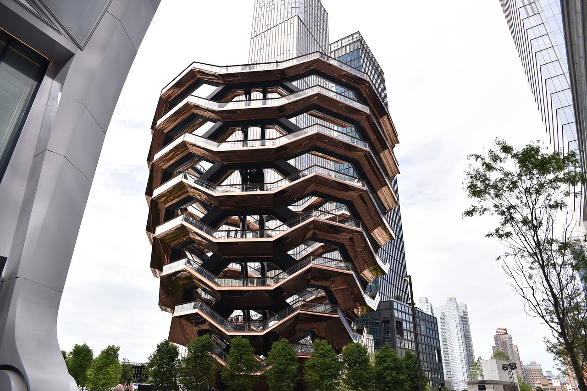

- Ma
- di
- Woe
- don
- vrij
- zat
- zon
- 1
- 2
- 3
- 4
- 5
- 6
- 7
- 8
- 9
- 10
- 11
- 12
- 13
- 14
- 15
- 16
- 17
- 18
- 19
- 20
- 21
- 22
- 23
- 24
- 25
- 26
- 27
- 28
- 29
- 30
- 31
Een redelijk nieuwe bezienswaardigheid in het centrum van Hudson Yards is het Vessel. Het Vessel is een interactief kunstwerk dat bestaat uit 154 trappen en 2500 treden, ik zal dus nog even moeten werken aan mijn conditie alvorens dit te kunnen beklimmen. Het heeft echter verschillende platformen en uitkijkpunten over de stad en de aangrenzende rivier, dat maakt het dus meer dan de moeite waard (Rosendaal & Faes, 2018). Handig om te weten is dat je vanaf 9u30 voor diezelfde dag gratis tickets kan krijgen (Connections.be, z.d.).